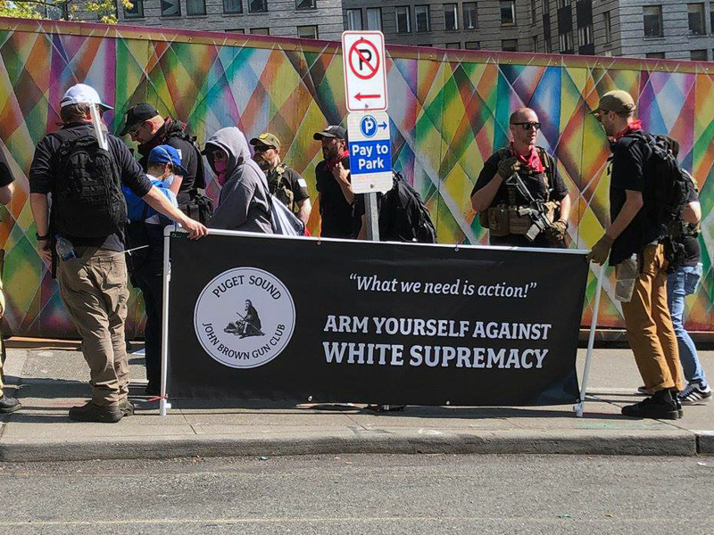

"I Am Antifa”: The Militant Faction of the New Left
- Category: Blog
- Client: ShiftWA
- Project date: 16 July, 2019
- Project URL: https:/ghost.io
Over the past three years, conservatives who have been physically attacked, forcibly censored, doxed and terrorized by antifa here in the PNW have repeatedly looked for leaders willing to step up, defend the rights of citizens and enforce the law. Antifa’s rise as the militant faction of the Left is the product of a Democratic party which has repeatedly turned their head and refused to denounce the group as the terrorists that they are. In their quest to reclaim power, the Left’s race to the radicalized bottom has emboldened these groups to form coalitions with heavily-armed anarchists.